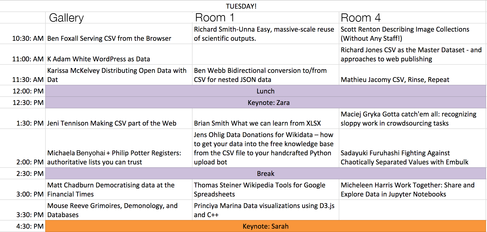
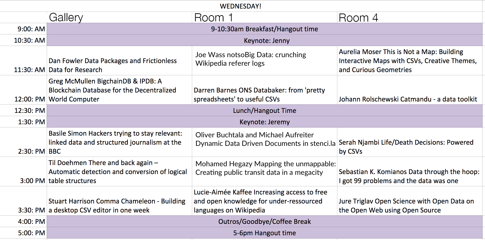

Keynote Speakers
-
Jenny Bryan
Statistics professor at the University of British Columbia who takes a special delight in data analysis and computing.
-
Sarah Gold
Designer interested in interaction, data and networks in the public domain, she is founder of the creative company IF.
-
Jeremy Freeman
Neuroscientist at HHMI Janelia. Open source, open science. Working on Binder, Lightning and more.
-
Zara Rahman
Researcher, writer and information activist whose work focuses on bridging the gap between activists and technologists.
See the full list of speakers.

-
Building Community
We want to bring together data makers/doers/hackers from backgrounds like science, journalism, open government and the wider software industry to share knowledge and stories.
-
For those who love data
csv,conf is a non-profit community conference run by some folks who really love data and sharing knowledge. If you are as passionate about data and the application it has to society as us then you should join us in Berlin!
-
Big and small
This isn't just a conference about spreadsheets. We are curating content about advancing the art of data collaboration, from putting your data on GitHub to producing meaningful insight by running large scale distributed processing on a cluster.


Presenters
-
Richard Smith-Unna
Easy, massive-scale reuse of scientific outputs
-
Aurelia Moser
This is Not a Map: Building Interactive Maps with CSVs, Creative Themes, and Curious Geometries
-
Till Doehmen
There and back again - Automatic detection and conversion of logical table structures
-
Richard Jones
CSV as the Master Dataset - and approaches to web publishing
-
Ben Webb
Bidirectional conversion to/from CSV for nested JSON data
-
Mathieu Jacomy
CSV, Rinse, Repeat
-
Brian Smith
What we can learn from XLSX
-
Scott Renton
Describing Image Collections (Without Any Staff!)
-
Matt Chadburn
Democratising data at the Financial Times
-
Karissa McKelvey
Distributing Open Data with Dat
-
Ben Foxall
Serving CSV from the Browser
-
Jens Ohlig
Data Donations for Wikidata - how to get your data into the free knowledge base
-
Serah Njambi
Life/Death Decisions: Powered by CSVs
-
Mouse Reeve
Grimoires, Demonology, and Databases
-
Jure Triglav
Open Science with Open Data on the Open Web using Open Source
-
K Adam White
WordPress as Data
-
Basile Simon
Hackers trying to stay relevant: linked data and structured journalism at the BBC
-
Dan Fowler
Data Packages and Frictionless Data for Research
-
Sadayuki Furuhashi
Fighting Against Chaotically Separated Values with Embulk
-
Greg McMullen
A Public BigchainDB: A Blockchain Database for the Decentralized World Computer
-
Thomas Steiner
Wikipedia Tools for Google Spreadsheets
-
Maciej Gryka
Gotta catch'em all: recognizing sloppy work in crowdsourcing tasks
-
Jeni Tennison
Making CSV part of the Web
-
Stuart Harrison
Comma Chameleon - Building a desktop CSV editor in one week
-
Micheleen Harris
Work Together: Share and Explore Data in Jupyter Notebooks
-
Johann Rolschewski
Catmandu - a data toolkit
-
Lucie-Aime Kaffee
Increasing access to free and open knowledge for under-ressourced languages on Wikipedia
-
Princiya Marina
Data visualizations using D3.js and C++
-
Sebastian K. Komianos
Data through the hoop: I got 99 problems and the data was one
-
Michaela Benyohai
Registers: authoritative lists you can trust
-
Philip Potter
Registers: authoritative lists you can trust
-
Darren Barnes
ONS Databaker: from 'pretty spreadsheets' to useful CSVs
-
Joe Wass
notsoBig Data: crunching Wikipedia referrer logs
-
Oliver Buchtala
Dynamic Data Driven Documents in stenci.la
-
Mohamed Hegazy
Mapping the unmappable: Creating public transit data in a megacity
-
Michael Aufreiter
Dynamic Data Driven Documents in stenci.la
Location
Conference venue is the Kalkscheune in Central Berlin.
Google Maps: Kalkscheune, Johannisstr. 2, 10117 Berlin, Germany

Schedule


{kind=link}
{kind=link}
Schedule: Tuesday
-
10:30:00
Serving CSV from the Browser
GalleryBen Foxall
Our web browsers are powerful tools for requesting, processing, and displaying CSV data in an open way. Though, as well as reading files, the web platform has the capability to generate CSV (or other formats) right in the browser. We’ll look at the advantages of doing this rather than using a traditional web service or script. I’ll show the browser features that make this possible now, and the ones that will make it even better in the future.
-
10:30:00
Easy, massive-scale reuse of scientific outputs
Room 1Richard Smith-Unna
I will present new open tools that enable easy, massive-scale analysis and reuse of the scientific literature and other outputs. These tools are optimised for non-technical users, but rest on a platform of components for power users. I will share lessons learned in the development process, and highlight pain-points that can guide data creation and curation efforts.
-
10:30:00
Describing Image Collections (Without Any Staff!)
Room 4Scott Renton
The University of Edinburgh’s "Library and University Collections" is very proud of its high-resolution images of the wealth of Special Collections it holds. The discovery of these images is handled by the LUNA Imaging platform, a supplied system, which allows high quality JP2K zooming, and also presents its metadata using robust solr indices. Getting the data into the application has presented us with a number of interesting challenges. To briefly describe this workflow: our Photographers receive readers’ orders from items they have found in our manuscripts, and these are recorded using Excel worksheets (we have offered to move the whole process to the web but for various reasons, this has not happened!); we take the shorthand data that they record and turn it into presentation standard, using an Excel macro which features various programming techniques; this macro also runs file renames, and runs a process to embed identification data into the TIFFs. From here, per collection CSVs are generated for upload to the system, which parses the particular CSV into the relevant format under the covers; this gives us a skeleton record in the LUNA system. As we do not have cataloguers devoted to our images, we need to be creative to enrich the records to make them searchable. We have built a purpose-built crowdsourcing application based on standard LAMP technologies to allow the crowd to further catalogue the record. The data is then hived off to the correct standard using JSON or XML, and run back in using processes we’ve built around the system’s REST API. This end-to-end workflow has grown organically, does everything we need it to do, and has CSV at its very heart.
Watch Video > -
11:00:00
WordPress as Data
GalleryK Adam White
Over the past two years we have been building a new JSON-based REST API for WordPress. Available today as a plugin, that API could be integrated into a core WordPress release as early as later this year—and with the reach WP has globally, that would mean a "quarter of the Internet" (as WP likes to bill its market share; see W3Techs) would suddenly have unprecedented access to their own content in a structured data format. I want to share the goals we have had while working on the WP-API project and its client libraries, and to open a discussion about how to educate users that they will have access to their data in this way—and that third parties may, as well.
-
11:00:00
CSV as the Master Dataset - and approaches to web publishing
Room 4Richard Jones
Websites which provide search and data analysis/visualisation capabilities to end-users can be costly and time-consuming to build, not least because custom back-ends for data management are often complex. Small organisations managing niche datasets understand and use spreadsheets well, but this creates barriers to publicising their information in visual and interactive ways. At [Cottage Labs](http://cottagelabs.com) we're working on a patchwork of open source tools borrowed, stitched together or enhanced to bridge that gap, and enable these organisations to keep and manage their master data as CSVs (or any other sheet format they like), then to get it online and into their websites to engage their communities. This talk will cover the common challenges (both technical and human), the data transformations, and the generalised approach to visualisations that makes this process quick and economical. We'll show a couple of examples in the wild, including [SPARC's](http://sparcopen.org/) [Open Access Spectrum](http://oaspectrum.org/) and the [World Nuclear Association's](http://www.world-nuclear.org/) [Reactor Database](http://www.world-nuclear.org/information-library/facts-and-figures/reactor-database.aspx).
-
11:30:00
Distributing Open Data with Dat
GalleryKarissa McKelvey
Distributing data with a centralized server can often be expensive and difficult to maintain. If we instead use a decentralized or 'flat' network, we can drastically increase bandwidth and ensure uptime by connecting those who download data with peers who already have it. Dat is a data tool for distributing datasets, small and large. Attendees will learn how to create a versioned data package with Dat and distribute it via an open network. This workshop will leave attendees with a superior tool for ensuring integrity, uptime, and bandwidth for open data.
-
11:30:00
Bidirectional conversion to/from CSV for nested JSON data
Room 1Ben Webb
A well defined nested format like JSON can be useful for defining a data standard. However, not everyone finds it easy to publish and consume JSON. For the Open Contracting and 360Giving data standards we've taken the hybrid approach of a canonical JSON representation with bidirectional conversion to/from spreadsheets. Since this involves converting between nested and flat representations we've called our software Flatten-Tool: https://github.com/OpenDataServices/flatten-tool/
-
11:30:00
CSV, Rinse, Repeat
Room 4Mathieu Jacomy
CSV is a common data format in social sciences and digital humanities, for instance a list of tweets that scholars want to analyze. However the most interesting data is often the most noisy. Filtering the content of a CSV is a necessity, but monitoring the process is an uneasy process since cleaning tools like Open Refine have poor visualization capabilities, and tools like Tableau Public are basic at filtering. In addition, no graphic interface is more efficient at filtering than a programming language like Javascript. At Sciences Po Paris médialab we often meet this problem and have decided to tackle it by developing a free and open source tool. "CSV Rinse Repeat" is a minimal web interface allowing you to upload a CSV and then iterate through filtering while keeping an eye on different visualizations. In a nutshell, you can filter the data represented as a javascript array while spawning simple d3 visualizations that synchronize with the output of your filtering. "CSV Rinse Repeat" functions well with Twitter data but accepts any kind of CSV. By leveraging the efficiency of Javascript and d3.js, data scientists can shortcut Ben Fry's famous data visualization process: "Acquire, Parse, Filter, Mine, Represent, Refine, Interact". We would be honored to present our tool and to share how we use it to explore large CSV data. GitHub repository: https://github.com/medialab/csv-rinse-repeat
Watch Video > -
12:00:00
-
12:30:00
-
13:30:00
Making CSV part of the Web
GalleryJeni Tennison
Imagine CSV was a format suited to the web, just as HTML is. We would see high quality data because it would be relied on for user interaction. We would see reuse of data because it could be linked. That was my personal aim working on the W3C CSV on the Web standards. I'll talk about the standards' features and the work left to do to make that dream a reality.
Watch Video > -
13:30:00
What we can learn from XLSX
Room 1Brian Smith
For the past year, I’ve been learning the ins and outs of the Excel file format in order to diff Excel spreadsheets, render them in the browser, and convert them into other file formats. Like CSVs, the Excel file format has been around for a long time, and has independently tried to solve many of the same problems the open data community is tackling now. For this talk, I’ll give an overview of how XLSX files work, the good ideas it has worth considering, as well as the warts best left behind.
-
13:30:00
Gotta catch'em all: recognizing sloppy work in crowdsourcing tasks
Room 4Maciej Gryka
If you have ever used crowdsourcing, you know that dealing with sloppy workers is a major part of the effort. Come see this talk if you want to learn about how to solve this problem using machine learning and some elbow grease. As a bonus, you will also find out how to properly persist your ML models and use them to serve predictions through an HTTP API.
Watch Video > -
14:00:00
Registers: authoritative lists you can trust
GalleryMichaela Benyohai + Philip Potter
We are developing software for Registers, an initiative from the Government Digital Service to improve the trust services and citizens can place in government data, building a mechanism to guarantee the integrity of these canonical, tabular datasets on The Web, through the use of digital proofs of authenticity.
- https://twitter.com/gdsteam/status/697818739547336704
- https://country.register.gov.uk
- http://blogs.fco.gov.uk/guestpost/2016/02/11/spreading-the-word-and-data-on-country-names/
- https://gdstechnology.blog.gov.uk/2015/10/13/guaranteeing-the-integrity-of-a-register/
- https://gds.blog.gov.uk/?s=registers
-
14:00:00
Data Donations for Wikidata - how to get your data into the free knowledge base
Room 1Jens Ohlig
Wikidata is a free, linked database that can be read and edited by both humans and machines.It acts as central storage for the structured data of its Wikimedia sister projects such as Wikipedia. In this talk, we'll see how large data donations from institutions like UNESCO or museums can find their way into Wikidata, how to curate data for upload and craft code for specific uploads. Apart from the technical side of things, we'll look at the community behind it all and how to navigate through discussion pages.
-
14:00:00
Fighting Against Chaotically Separated Values with Embulk
Room 4Sadayuki Furuhashi
We created a plugin-based data collection tool that can read any chaotically formatted files called "CSV" by guessing its schema automatically
Watch Video > -
14:30:00
-
15:00:00
Democratising data at the Financial Times
GalleryMatt Chadburn
Hi. In 2015 the FT rebuilt it’s in-house data platform with a mission to democratise access to it’s data. I’ll share about how we transformed an oblique data warehouse, infrequently updated, and understood by a few, into a stream of real-time information *accessible* to anyone who wanted to use it. This talk is about the *usability* of data - through it’s collection, to systems used to model, access and query it.
Watch Video > -
15:00:00
Wikipedia Tools for Google Spreadsheets
Room 1Thomas Steiner
In this talk, we introduce the Wikipedia Tools for Google Spreadsheets. Google Spreadsheets is part of a free, Web-based software office suite offered by Google within its Google Drive service. It allows users to create and edit spreadsheets online, while collaborating with other users in realtime. Wikipedia is a free-access, free-content Internet encyclopedia, whose content and data is available, among other means, through an API. With the Wikipedia Tools for Google Spreadsheets, we have created a toolkit that facilitates working with Wikipedia data from within a spreadsheet context. We make these tools available as open-source on GitHub (https://github.com/tomayac/wikipedia-tools-for-google-spreadsheets), released under the permissive Apache 2.0 license.
-
15:00:00
Work Together: Share and Explore Data in Jupyter Notebooks
Room 4Micheleen Harris
We all like to see what our data looks like before anything important happens. We also like second opinions. Is it going to be good enough for analytics like forecasting or recommendations? How do we avoid the dreaded "garbage in, garbage out" scenario? What's the easiest way to get my colleagues to take a look? I've been playing in Jupyter notebooks systems, specifically writing R code, a lot lately. I use Jupyter for a scratch pad, testing environment, quick data exploration tool (with all the graphical power R has to offer) and most importantly I share these notebooks with others so they may play and explore, as well as offer their opinions. I'm going to offer some logic behind collaborating with this simple, yet interactive, method of using Jupyter notebooks. I will also demo a notebook system running R, aimed at pre-processing and cleaning data as well as taking a peek at its quality. Hopefully, we can work together.
-
15:30:00
Grimoires, Demonology, and Databases
GalleryMouse Reeve
Grimoires (books of spells and magical invocations) appear in Europe as early as the 3rd century, and made up a thriving genre in the Renaissance and Enlightenment. These books present a hierarchy of hell, descriptions of demons, and magical formulas for results as mundane as a warm bath and as extraordinary as raising the dead. This talk describes an approach to exploring the content and historical context of these books as a data problem through algorithms, graph data structures, and a whole lot of old fashioned research.
-
15:30:00
Data visualizations using D3.js and C++
Room 1Princiya Marina
D3.js is a power tool for data visualizations. Data visualizations are only good if people see them, and there’s no better place to see them than on the internet, in your browser. C++ is still considered a popular choice when it comes to programming and machine learning. Node.js Addons are dynamically-linked shared objects, written in C or C++, that can be loaded into Node.js using the require() function, and used just as if they were an ordinary Node.js module. They are used primarily to provide an interface between JavaScript running in Node.js and C/C++ libraries. I have built a framework which comprises of Node.js, C++ and D3.js for interactive web visualizations. D3.js is a javascript library added to the front-end of any web application. The back-end (the server: Node.js and C++ library) will generate the necessary data. The part of the application the users interact with (the front-end) will use D3.js. Using this approach, one can leverage the power of C++ for manipulating large data sets and D3.js for showing beautiful visualizations on the browser.
-
16:30:00
Schedule: Wednesday
-
09:00:00
-
10:30:00
-
11:30:00
Data Packages and Frictionless Data for Research
GalleryDan Fowler
Data-driven work is an ever-increasing part of research. At the same time, there is very significant friction around the acquisition, sharing and reuse of data. Based on working both with researchers and government for more than a decade on the issues surrounding data sharing and use, we have identified a specific subproblem which is both significant and tractable: the development and adoption of a lightweight specification and associated tooling for “packaging” (tabular) data and transporting it easily and efficiently from one tool, or one user, to another. The approach is titled “Data Package” because our work has close analogy with “containerization” in shipping and “packaging” in software.
Watch Video > -
11:30:00
-
11:30:00
This is Not a Map: Building Interactive Maps with CSVs, Creative Themes, and Curious Geometries
Room 4Aurelia Moser
The meaning of "map" across disciplines is remarkably varied. It's effectively a spatial representation of geo-topography, a linking between tables by foreign key, a datatype in C++... Today, coders make creative use of custom basemaps, building remarkable maps of multivariate information off-the-(beaten) geographic projection. Many have designed and published interactive maps of cemetery burial plots, galactic drawings of the Star Wars Universe, sequence maps of human genes, heatmaps of court traffic during the NBA finals. For some of the most creative maps, "artisanal" CSV data is the vehicle for innovation in geocoding to non-traditional, historical, handmade basemaps. This talk will explore other maps, and investigate topics and themes not yet covered in interactives...detailing how to map them, and why mapping unmapped data might be the perfect expression of their meaning.
-
12:00:00
A Public BigchainDB: A Blockchain Database for the Decentralized World Computer
GalleryGreg McMullen
When we built BigchainDB, we always had in mind a public instance. We knew that along with projects like Ethereum and IPFS, we had a chance to make a major contribution to the dream of a fully decentralized Internet. This talk will discuss the benefits of a public blockchain database, the challenges in building a decentralized organization that is cohesive enough to administer itself without creating a central authority, and the potential for building the decentralized Internet.
Watch Video > -
12:00:00
ONS Databaker: from 'pretty spreadsheets' to useful CSVs
Room 1Darren Barnes
Out of the last CSV Conf, the Office for National Statistics hooked up with Scraper Wiki to produce a tool for more easily converting the traditional and all too common 'pretty spread sheet' into a much more open, machine readable and usable CSV format. This tool is called DataBaker and is freely available on GitHub. The tool is effectively a wrapper for the useful XYPath Python package also produced by Scraper Wiki and Data Baker allows easy creation of recipes to extract data from spreadsheets in a robust and flexible way. This talk will give a brief overview of the tool, how we use it at the ONS and how we see it moving forward (adding Linked Data URIs to the output fields?). We hope to engage community interest for adapting this tool for even wider use.
Watch Video > -
12:00:00
Catmandu - a data toolkit
Room 4Johann Rolschewski
Catmandu
-
12:30:00
-
13:30:00
-
14:30:00
Hackers trying to stay relevant: linked data and structured journalism at the BBC
GalleryBasile Simon
At BBC News Labs, we've been pushing for more linked data in news for years now. We built a massive international news aggregator on linked data concepts and full-fledged functionalities... but it's our production and live services who do the core of the job today. We're trying to stay relevant and to model our massive dataset of facts, quotes, news and articles. The answer to this may lie in structured journalism.
Watch Video > -
14:30:00
Dynamic Data Driven Documents in stenci.la
Room 1Oliver Buchtala and Michael Aufreiter
Stencila is bridging the gap between coders and clickers to make open, data driven documents that are accessible to all. The key to reproducibility is collaboration and true collaboration comes from allowing people to use the interfaces they want, where they want.
-
14:30:00
Life/Death Decisions: Powered by CSVs
Room 4Serah Njambi
Talk is about Code For Africa's suite of simple spreadsheet-based apps that help citizens take life/death decisions about health issues. Quack doctors are a major concern in Kenya. Using data from Kenya's Medical Practitioners' Board, and in partnership with Kenya's largest blue-collar newspaper, I'd like to show what impact spreadsheet-based apps can have on communities. bit.ly/starHealth
Watch Video > -
15:00:00
There and back again - Automatic detection and conversion of logical table structures
GalleryTill Doehmen
Tabular data comes in a plethora of shapes and flavors. The logical structure of a dataset is decided by the dataset publisher. Common formats are the wide format, where variables are columns and the long format, where the variable name is itself a column entry. Mixtures of the two formats are also possible. We present our work on automatic detection of logical table structures, e.g. which variables are identifiers, which are categories and which are observations. We also present methods to automatically convert to a canonical format. Overall, we aim to reduce the amount of janitorial work currently required when ingesting data. We evaluate our work using a collection of 20,000 CSV files scraped from data.gov.uk.
Watch Video > -
15:00:00
Mapping the unmappable: Creating public transit data in a megacity
Room 1Mohamed Hegazy
20 Million Inhabitants. ~96 km2 area. 3 Metro Lines, 4529 Public Buses, ~15’000 registered Microbuses and an estimated 80’000 unregistered Shared Taxis. Cairo is a megacity with little information on public transportation. How do we map that? Informal public transportation dominates service provision in Africa: Intense competition for limited urban road space leads to chronic congestion in developing countries negatively impacting the climate, the environment, and citizens’ health. Safe, clean, and affordable transport provides access to opportunities, services, goods and amenities. In this talk we describe Transport for Cairo’s work to map the city, the challenges awaiting us and the limitations of existing data structures to capture the real world’s complexity.
Watch Video > -
15:00:00
Data through the hoop: I got 99 problems and the data was one
Room 4Sebastian K. Komianos
Earlier this year I started scrapping and analysing data from anywhere possible in order to create a database with advanced basketball statistics from all the major basketball competitions around Europe and give organisations, teams, players, agents and fans a tool to help them improve their understanding of what's happening in games. In this talk I will try to demonstrate all the problems and pitfalls I (a beginner with data collection and analysis) ran into while working on this project; from non-existent, weirdly-formatted or sparse data to data serving and database architecture challenges.
Watch Video > -
15:30:00
Increasing access to free and open knowledge for under-ressourced languages on Wikipedia
Room 1Lucie-Aime Kaffee
One of the biggest barriers for accessing knowledge on the Internet is language. We tend to provide information in one or at most a few languages, which makes it hard for speakers of all the other languages to access that same information. This is also an issue on Wikipedia, a project widely and internationally used by all kind of people. But there are many topics that are only covered in few languages on Wikipedia. People who don’t speak any of these don’t have access to all the information available potentially vital to them. In this talk I will show you how we can give more people more access to more knowledge by making use of Wikipedia’s reach and Wikidata’s multilingual data. https://www.mediawiki.org/wiki/Extension:ArticlePlaceholder
-
15:30:00
Open Science with Open Data on the Open Web using Open Source
Room 4Jure Triglav
A collaborative spreadsheet web app, where each cell can be any function in R or Python, as simple or complex as you want, updated live and easily shared with anyone, built as a collaboration between Stencila (https://github.com/stencila/stencila), Substance (http://substance.io/) and the Collaborative Knowledge foundation (http://coko.foundation/).
Watch Video > -
16:00:00
-
17:00:00
More Information
csv,conf strives to be a supportive and welcoming environment to all attendees. We encourage you to read the Conf Code of Conduct and will be enforcing it.
For any questions contact @csvconference or csv-conf-coord at googlegroups dot com
Organizers
csv,conf is a not-for-profit event organized by the following unpaid volunteers
- John Chodacki, California Digital Library
- Elaine Wong, CBC
- Karthik Ram, rOpenSci
- Martin Fenner, DataCite
- Max Ogden, dat
- Dan Fowler, Open Knowledge International
- Jo Barratt, Open Knowledge International
Documents
Here is our announcement poster, sticker template and sponsorship prospectus.
{kind=link}
{kind=link}
Check out csv,conf,v1
The first csv,conf was held in 2014. We hosted 30 talks all over the data spectrum including upcoming CSV standards from the W3C, scientific data testing tools in R, and how to query data from Wikipedia.